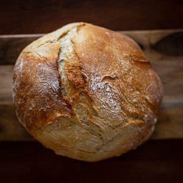
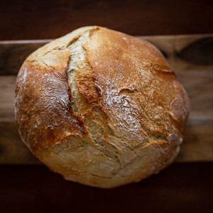

About Us
The original Red Cafe Bistro – this is where everything began. Our Glasgow restaurant is the place where our family created and perfected the authentic dining experience that we are famous for today.
With several menus packed full of traditional dishes, we have secured our place as the favourite, family-friendly restaurant in the Glasgow community.
Our menus and setting provide the perfect atmosphere for any occasion; from romantic meals, to family parties, to graduation celebrations and more. At Red Cafe Glasgow, our friendly staff and stunning decor ensure you’ll feel like one of the family every time you visit.
We can't wait to see you.
Red Cafe@Home
Red Cafe@Home is a brand new dining experience that allows you to enjoy your favourite restaurant dishes from the comfort of your own home.
Red Cafe@Home dining allows you to preorder dishes for a chilled delivery to your home to be eaten at your own convenience – taking the hassle out of cooking.
There’s also starters, desserts and drinks to bring even more of the restaurant experience in an At Home dining setting.
Staying at home doesn’t need to mean cooking for yourself. Take a look at our Red Cafe @ Home website and preorder today!
- Buchanan Street
- Glasgow
- G1 1AA
- Tel : 014114145888
- email: info@redcafebistro.com
Press arrows to slide through testimonials
The Griswalds

Everyone had a wonderful time at the cafe last night. As expected, the food was delicious and our servers were so friendly and helpful - we loved them! It was a delightful at round.
The Adams Family
We were at the cafe last night. It was amazing! I have to say it is the best meal we have had in quite some time. You will definetely be seeing us all again. We can't for our family to come and visit so we can bring them with us.
Red Cafe, Buchanan Street
Situated directly across from the Underground, Red Cafe is truly the home of authentic dining in the heart of Glasgow. Following the same ethos as our original restaurant, we serve delicious, traditional food from breakfast through to dinner, 7 days a week.
The Dining Experience
Our Glasgow City Centre restaurant is always filled with a buzzing atmosphere, happy diners and the smell of beautiful, authentic food. We promise that no matter what time of the day you dine with us, we’ll always leave you wanting more from the Red Cafe
- Monday - 12:00-22:00
- Tuesday - 12:00-22:00
- Wednesday - 12:00-22:00
- Thursday - 12:00-22:00
- Friday - 12:00-23:00
- Saturday - 12:00-23:00
- Sunday - 12:00-22:00